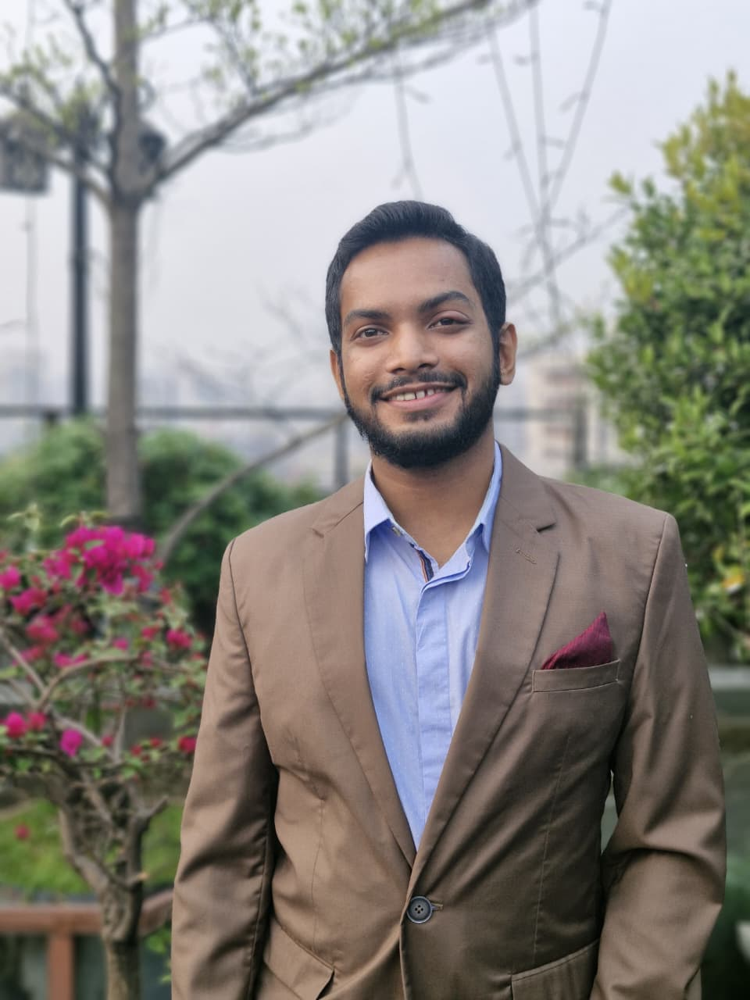

I'm Nayeemuddin — a BUET-trained naval architect who moved from designing ships to building businesses. Today I lead operations, marketing, and product launches at the intersection of engineering and commerce.

A rare combination: I can read a lines plan and a P&L with equal comfort.
Ship design, hydrostatics and stability, resistance and propulsion, FRP boat manufacturing. Published research on semi-submersible motion analysis in the Bay of Bengal.
Brand launches, marketing research, cost analysis, digital strategy, and team leadership — currently driving the Vikings Boat brand at Tech Marine Solutions Ltd.
End-to-end procurement, vendor management, and compliance across development projects — with ISCEA-certified supply chain expertise.
My reflections on a decade of change in Bangladeshi society — family, technology, and identity. Listen →
Comparative motion analysis of the CS50 MK II and a conventional semi-submersible in the Bay of Bengal. Details →
From factory layout to brand launch: building durable FRP boats for local and global markets. Read more →